Project Overview
- Goal: build a self-balancing robot that maintains stability on two wheels
- Arduino continuously reads data from an accelerometer and gyroscope to determine robot's tilt angle
- Using a PID feedback loop, the Arduino determines how quickly to drive the motors to restore balance
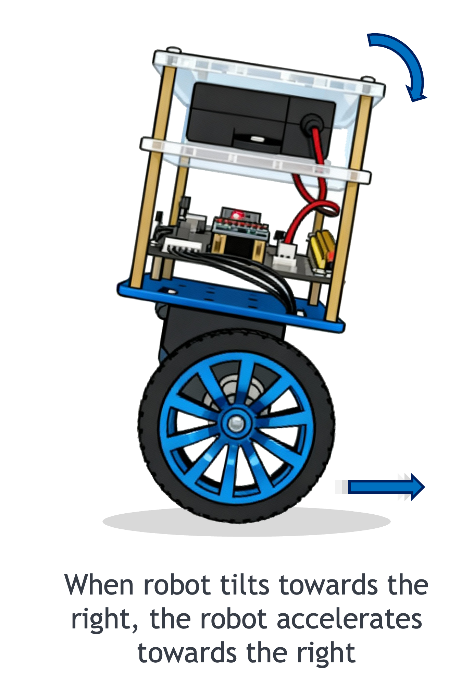
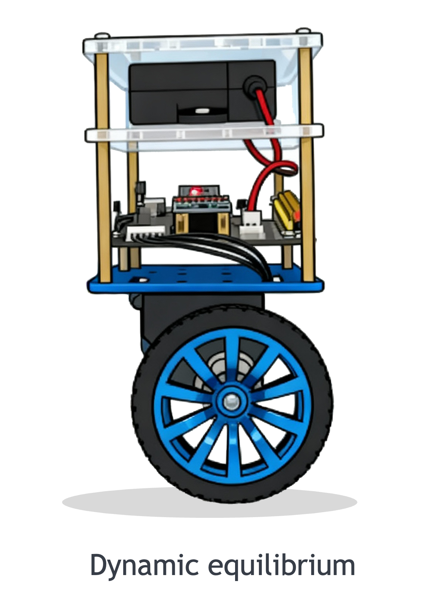
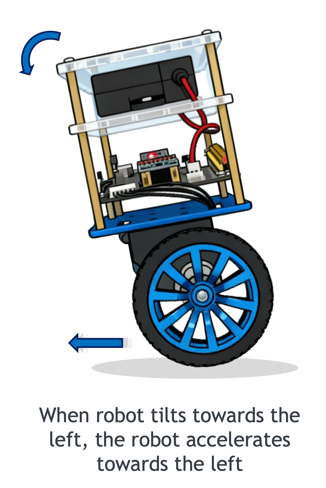
Hardware
|
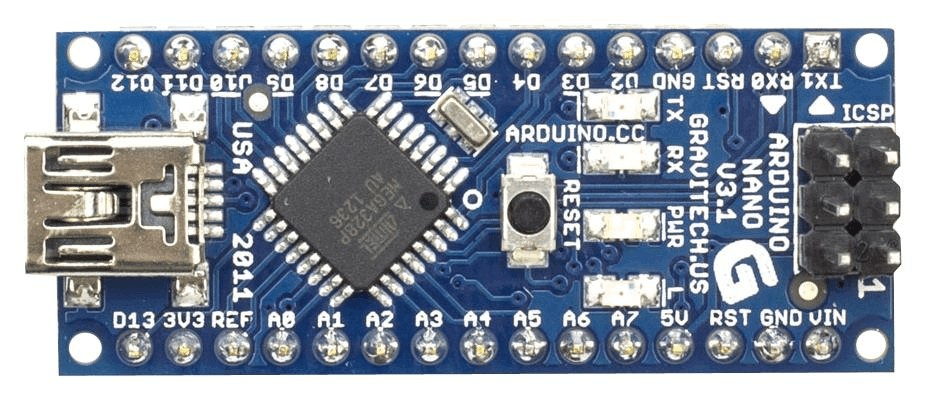 Arduino Nano
|
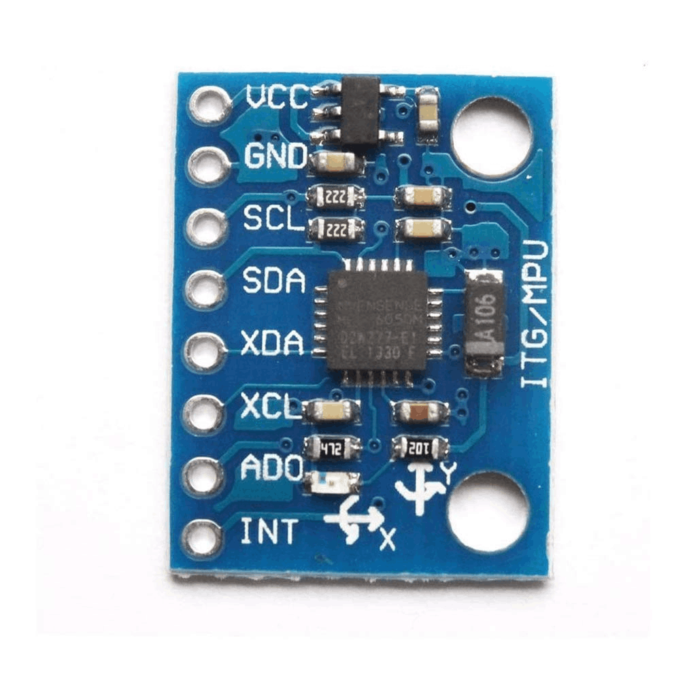 GY-521 (MPU-6050), accelerometer and gyroscope
|
|
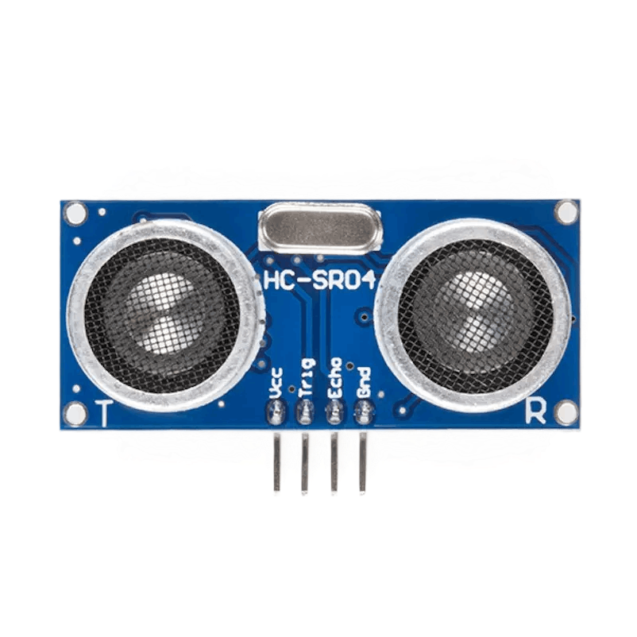 HC-SR04 ultrasonic sensor
|
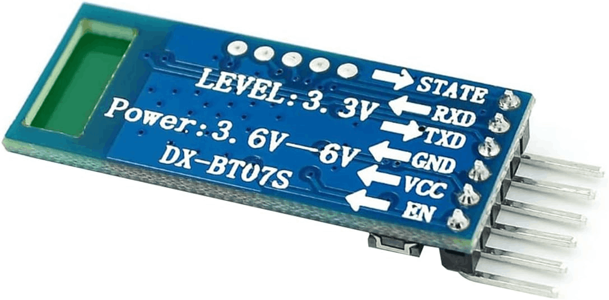 DXBT-16 bluetooth module
|
|
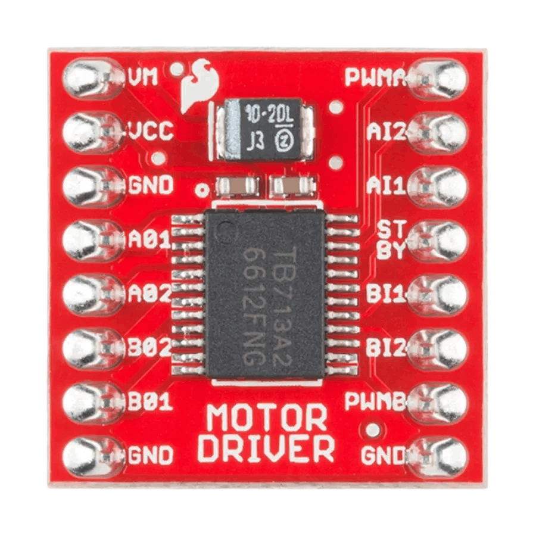 TB6612FNG motor drivers
|
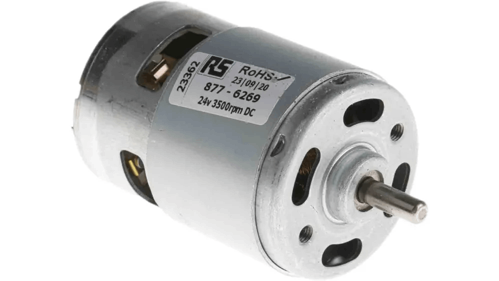 DC Motors
|
|
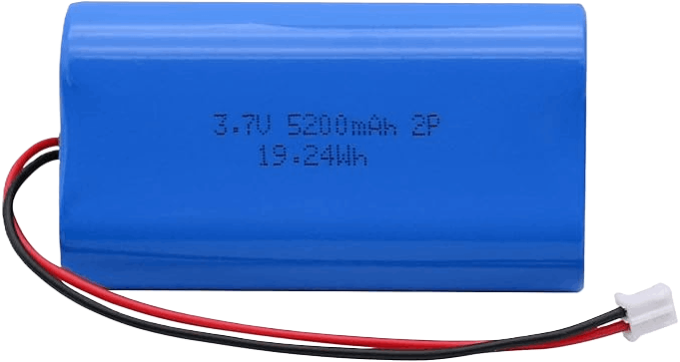 Lithium ion battery
|
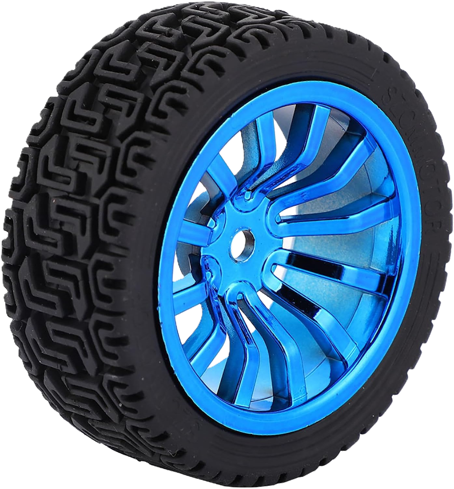 Wheels
|
Final Product
PID Control
Arduino
PCB Design
I²C Communication
BLE Communication
Signal Processing